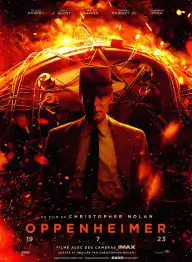
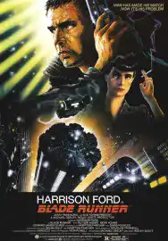
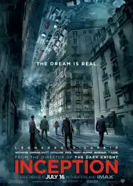
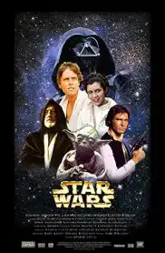

Others Projects
In this section, we are pleased to highlight the creative ventures and innovative projects of our talented comrades. Each project reflects the diverse interests and skills of our classmates, providing insight into the rich palette of ideas that thrives within our community. From thought-provoking works of art to ingenious technological solutions, these projects demonstrate the collective brilliance and passion that define our group. Join us in this exploration of inspiration and ingenuity as we delve into the unique creations fashioned by our fellow students. Each project is a testament to their dedication, creativity, and the limitless potential that resides within our community. Explore and get inspired!




